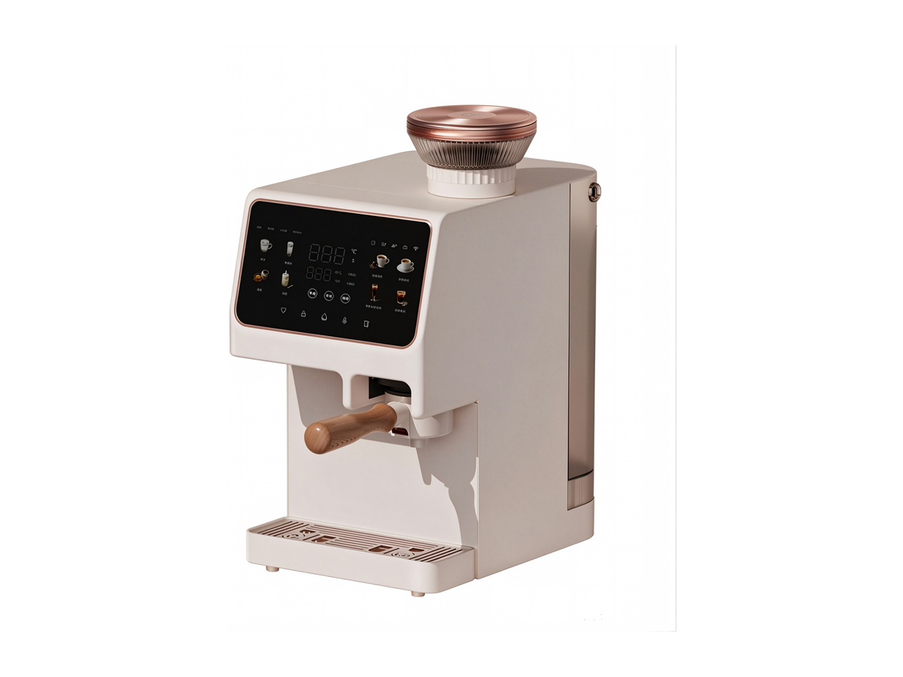

01 / ครัว
ห้องครัว — ใต้ซิงก์
ติดตั้งซ่อนใต้ซิงก์ — ระบบ RO ประสิทธิภาพสูงสำหรับห้องครัวในครอบครัว.
รุ่นตัวแทน:RP-U09 — 800–1400 GPD · 4 ตัวเลือก.
ROPureOEM / สตูดิโอผลิตภัณฑ์ OEM
เริ่มต้นด้วยรุ่นที่ยืนยันแล้ว ปรับให้เหมาะกับตลาดของท่าน อนุมัติตัวอย่างของท่าน.
สำหรับเจ้าของแบรนด์และผู้จัดจำหน่ายในสหภาพยุโรป สหราชอาณาจักร สหรัฐอเมริกา ตะวันออกกลาง เอเชียตะวันออกเฉียงใต้ และออสเตรเลีย
สำรวจรุ่นต่าง ๆ ปรึกษาโครงการของท่าน
การเลือกรุ่น · แบรนด์ส่วนตัว · การประสานงานส่งออก

เลือกซื้อตามการใช้งาน
01 / ครัว
ติดตั้งซ่อนใต้ซิงก์ — ระบบ RO ประสิทธิภาพสูงสำหรับห้องครัวในครอบครัว.
รุ่นตัวแทน:RP-U09 — 800–1400 GPD · 4 ตัวเลือก.

02 / บนเคาน์เตอร์
กาแฟบดสดและน้ำบริสุทธิ์ RO จากเครื่องบนเคาน์เตอร์เครื่องเดียว.
รุ่นตัวแทน:RP-C11 — จากเมล็ดถึงแก้ว · น้ำบริสุทธิ์ RO

03 / เชิงพาณิชย์
น้ำร้อน น้ำเย็น และน้ำแข็งแบบตั้งพื้น สำหรับสำนักงาน โรงเรียน และพื้นที่ส่วนกลาง.
รุ่นตัวแทน:RP-C23 — 100G RO · 50–100 คน.

04 / ทั้งบ้าน
ระบบปรับสภาพน้ำอ่อนส่วนกลางสำหรับทั้งบ้าน.
รุ่นตัวแทน:ซีรีส์ RP-W01 — 32,000–64,000 grain · 3 ขนาด.
ดูใกล้ชิดยิ่งขึ้น
รุ่นในแค็ตตาล็อกที่ยืนยันแล้ว — โปรดตรวจสอบข้อมูลจำเพาะก่อน MOQ 200 ชิ้นต่อรุ่น.
เครื่องชงกาแฟ จากเมล็ดถึงแก้ว 4-in-1 พร้อมระบบกรองน้ำ RO
 บนเคาน์เตอร์
บนเคาน์เตอร์น้ำอัดลม น้ำเย็น และน้ำร้อน — สองรุ่นย่อย
 ใต้ซิงก์
ใต้ซิงก์เครื่องกรองน้ำ RO น้ำไฮโดรเจนใต้ซิงก์
 ก๊อกน้ำ
ก๊อกน้ำตัวกรองก๊อกน้ำหมุนได้ 360°
 ฝักบัว
ฝักบัวตัวกรองฝักบัวทรงสี่เหลี่ยม
 ใต้ซิงก์
ใต้ซิงก์ระบบ RO ไส้กรองแบบดึงออกโดยไม่ใช้เครื่องมือ
 บนเคาน์เตอร์
บนเคาน์เตอร์เครื่องกรองน้ำ RO พร้อมเหยือกต้มน้ำ
 บนเคาน์เตอร์
บนเคาน์เตอร์เครื่องกรองน้ำ RO พร้อมน้ำแข็ง น้ำร้อน และน้ำเย็น

OEM vs ODM
เลือกรุ่นที่ยืนยันแล้วและปรับให้เป็นของท่าน: โลโก้ สี ไส้กรอง ก๊อกน้ำ บรรจุภัณฑ์.
ปรับโครงสร้าง ฟังก์ชัน และแม่พิมพ์ตามโจทย์ของท่าน โจทย์ทุกฉบับต้องผ่านการประเมินทางวิศวกรรมก่อน.
กำลังมองหาผลิตภัณฑ์ตัวกรองน้ำอยู่ใช่ไหม? ผู้ผลิตตัวกรองน้ำ OEM — ตัวกรองน้ำที่ผลิตเพื่อแบรนด์ของคุณ →
จากรุ่นสู่แบรนด์ของท่าน
โรงงานและ QC


ภาพโรงงานและ QC: การผลิต การทดสอบ และการจัดส่ง.
การรับรองมาตรฐาน
แจ้งรุ่นและตลาดเป้าหมายของท่าน — เราจะยืนยันรายการที่ถูกต้องก่อนที่ท่านจะสั่งซื้อ.
ตลาดทั่วไป:สหภาพยุโรป · สหราชอาณาจักร · สหรัฐอเมริกา · ตะวันออกกลาง · เอเชียตะวันออกเฉียงใต้ · ออสเตรเลีย
ตลาดอื่น รวมถึง CB ในกรณีที่เกี่ยวข้อง จะยืนยันตามรุ่นเมื่อสอบถาม.

คำถามที่พบบ่อยบนหน้าแรก
200 ชิ้น ต่อรุ่น.
ได้ — ตัวอย่างมีค่าใช้จ่าย และค่าใช้จ่ายจะคืนให้เมื่อท่านสั่งซื้อจำนวนมากครั้งแรก กรุณาอนุมัติตัวอย่าง รวมถึงแบรนด์และบรรจุภัณฑ์ ก่อนการผลิตจำนวนมาก.
ระยะเวลานำการผลิตจะยืนยันตามใบเสนอราคาแต่ละครั้ง ขึ้นอยู่กับรุ่น ปริมาณ และใบรับรอง.
ต้องชำระเงินก่อนจัดส่งสินค้า เราไม่มีเงื่อนไขเครดิต.
ยืนยันตามตลาด ตามรุ่น และตามคำสั่งซื้อ แจ้งรุ่นและตลาดเป้าหมายของท่าน แล้วเราจะยืนยันรายการที่ถูกต้องก่อนที่ท่านจะสั่งซื้อ.
บทความความรู้

คู่มือการซื้อ
MOQ คือ 200 ชิ้น ต่อรุ่น สำหรับเครื่องกรองน้ำแบบ private-label สั่งตัวอย่างก่อน ค่าตัวอย่างจะคืนให้เมื่อสั่งซื้อจำนวนมากครั้งแรก จัดส่งภายใน 40 วัน หลังการอนุมัติตัวอย่าง.

คู่มือการซื้อ
จับคู่กำลังการผลิต RO กับน้ำดิบของท่านก่อนเลือกรุ่น — เปรียบเทียบกำลังการผลิตของรุ่นตั้งโต๊ะ รุ่นใต้ซิงก์ และรุ่นตู้จ่ายน้ำ.

คู่มือการซื้อ
แรงดันไฟฟ้าและความถี่สามารถปรับตั้งได้ตามประเทศเป้าหมาย — ยืนยันตามรุ่นและคำสั่งซื้อแต่ละครั้ง.
แจ้งตลาด ประเภทผลิตภัณฑ์ และปริมาณของท่าน.